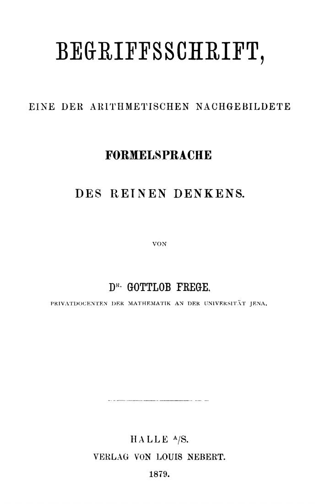
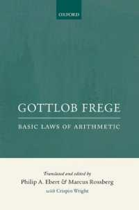
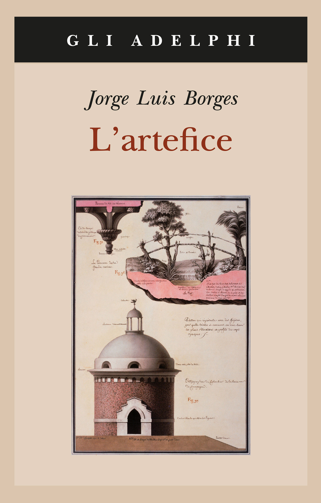

52:07 · 8 OPERE
Mapping reality.
Il filo del discorso
Il contributo,in inglese,parte dai nomi degli oggetti per descrivere la conoscenza come una attività di collegamento: fra parole e cose,immagini e percezioni,concetti e relazioni. La immagine del pastore che associa una pietra a ogni pecora introduce il passaggio dal confronto concreto all’astrazione numerica. Il relatore riprende poi la distinzione diKorzybski fra mappa e territorio,la mappa smisurata diBorges e la pipa diMagritte: una rappresentazione può essere utile proprio perché seleziona e organizza,senza coincidere con ciò che rappresenta. Nella seconda parte applica questo ragionamento alla storia delle idee. Alla semplice linea del tempo contrappone mappe navigabili,in cui libri,autori,lettere e problemi siano collegati e interrogabili. Frege,Russell eWittgenstein costituiscono il primo esempio,seguito da altre relazioni filosofiche. La conclusione torna alla provvisorietà dei modelli e alla differenza fra comprendere e possedere una certezza assoluta. La scheda conserva il progetto di una conoscenza aperta,precisando però alcuni esempi: la storia dello zero precedePeano,Begriffsschrift non è il libro a cuiFrege aggiunse la risposta aRussell e la meccanica quantistica non dimostra da sola un multiverso. Anche una mappa delle influenze richiede fonti,direzioni e tipi di rapporto espliciti.
I libri nel discorso

Begriffsschrift. Eine der arithmetischen nachgebildete Formelsprache des reinen Denkens
Frontespizio originale1879, non copertina esterna: Halle,VerlagvonLouisNebert,1879,X,88p. Frontespizio originale dal facsimile dellaNiedersächsischeStaats-undUniversitätsbibliothekGöttingen,PPN538957069,pagina2PDF; non copertina esterna moderna. Il PDF completo resta privato.
Titolo,autore,editore,luogo e anno leggibili sul documento. Edizione storica usata come riferimento,non volume confermato nel filmato.
Begriffsschrift eFrege espliciti nell’esempio della mappa; titolo normalizzato dallaASR.
Passaggio 37:21 ↗ · Fonti e libro ↗
Grundgesetze der Arithmetik (Leggi fondamentali dell’aritmetica)
Identificazione probabile
Copertina: Edizione illustrata: Gottlob Frege: Basic Laws of Arithmetic, Oxford University Press, 2013, traduzione e cura di Philip A. Ebert e Marcus Rossberg, con Crispin Wright. Comprende i due volumi tedeschi del 1893 e 1903.
Copertina autentica verde e crema Oxford con titolo inglese e curatori. Immagine piccola di 200 × 303 pixel, dichiarata senza attribuirle alta risoluzione. È la traduzione integrale 2013 dei due volumi, non The Foundations of Arithmetic del 1884 né la traduzione parziale di Furth del 1964. Il titolo non è pronunciato nel video: l’identificazione resta probabile.
Vicenda della letteraRussell e della appendice aFrege riconducibile aiGrundgesetze,non alBegriffsschrift nominato dal relatore.
Passaggio 40:06 ↗ · Fonti e libro ↗
Del rigore della scienza (Del rigor en la ciencia)
Identificazione probabile
Copertina della raccoltaL’artefice che contiene il testo: Copertina autentica della raccoltaL’artefice,Adelphi,collanagliAdelphi506,2016,220p,ISBN9788845931109,a cura diTommasoScarano. Il microtesto apparve nel1946 e fu ripreso inElhacedor1960. L’immagine non è una edizione autonoma del singolo testo.
ISBN riferito alla raccolta,non al racconto. La attribuzione fittizia aSuárezMiranda non identifica un vero libro seicentesco.
Borges e mappa dell’impero scala1:1 riconoscibili; titolo del microtesto non pronunciato.
Passaggio 18:59 ↗ · Fonti e libro ↗
La trahison des images (Ceci n’est pas une pipe)
Riproduzione del dipinto: RIPRODUZIONE DEL DIPINTO The Treachery of Images, 1929, olio su tela, Los Angeles County Museum of Art, inventario 78.7. Acquisto con fondi della collezione Mr. and Mrs. William Preston Harrison. Non è una copertina libraria.
Immagine autentica LACMA, intera: pipa dipinta, iscrizione Ceci n’est pas une pipe e firma Magritte. Copyright indicato dal museo: © C. Herscovici/Artists Rights Society (ARS), New York. Non viene dichiarata una licenza libera.
Magritte,immagine della pipa eCeci n’est pas une pipe espliciti.
Passaggio 23:41 ↗ · Fonti e libro ↗
Fisica
Identificazione probabile
Copertina di Opere III: Fisica, Del cielo: Laterza · Opere III, Fisica e Del cielo · traduzioni Russo e Longo
Copertina autentica del volume III delle Opere di Aristotele, che contiene Fisica e Del cielo. Catalogo Laterza: edizione 1983, ristampa 2007. Il dato automatico datePublished della pagina corrente non è assunto come anno originale del libro.
Definizione del tempo come numero del movimento secondo prima e poi,riconoscibile inFisicaIV11.
Passaggio 32:32 ↗ · Fonti e libro ↗
Tractatus logico-philosophicus
Copertina del volume che comprende il Tractatus: Einaudi · Tractatus logico-philosophicus e Quaderni 1914–1916 · 2009
Copertina del volume Einaudi che comprende sia il Tractatus sia i Quaderni 1914–1916. La voce identifica il Tractatus; l’ISBN appartiene al volume contenitore e l’edizione non è accertata nel filmato.
TractatusLogicoPhilosophicus esplicito nella reteFrege–Russell–Wittgenstein.
Passaggio 42:27 ↗ · Fonti e libro ↗
Amleto
Identificazione probabile
Copertina: BUR · 2022 · traduzione di Rocco Coronato · illustrazioni di John Austen
Immagine autentica dell’opera, controllata visivamente; non identifica l’edizione usata nel video.
Amleto,nutshell,infinite space,bad dreams: allusione riconoscibile adattoIIscena2.
Passaggio 50:40 ↗ · Fonti e libro ↗
Dichiarazione d’indipendenza degli Stati Uniti d’America
Identificazione probabile
Facsimile: incisione di Stone del 1823: Documento del 4 luglio 1776 · incisione di William J. Stone del 1823
Riproduzione documentaria dell’incisione di Stone del 1823 conservata dai National Archives. Non è la pergamena originale del 1776, né la copertina di un libro.
Jefferson e self-evident truths richiamano laDichiarazioned’indipendenza,senza edizione.
Passaggio 7:53 ↗ · Fonti e libro ↗Minutaggi ricavati da testi automatici, da riascoltare. Le identificazioni probabili sono segnalate accanto ai libri.